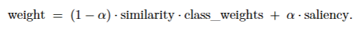

Module 3 - Tuần 4 - Abstract Classifier: Phân loại chủ đề bài báo khoa học có giải thích
Hệ thống phân loại publication abstract theo các chủ đề khoa học (astro-ph, cond-mat, cs, math, physics) với giải thích token-level, KNN bỏ phiếu trọng số cải tiến, và dashboard Streamlit trực quan.
- 3 min read

🧠 Module 3 - Tuần 4 — 🔎 Abstract Classifier có giải thích
Chào mừng bạn đến với Abstract Classifier của Time-Series Team! Hệ thống này giúp phân loại một publication abstract vào các topic: astro-ph, cond-mat, cs, math, physics. Điểm đặc biệt: mô hình đi kèm khả năng giải thích (XAI) ở mức token/cụm từ, giúp bạn hiểu rõ vì sao một abstract được gán vào chủ đề dự đoán.
Hệ thống hỗ trợ 3 lớp chức năng:
- 🎯 Phân loại cơ bản (BoW/TF–IDF/Embeddings)
- ⚖️ KNN bỏ phiếu trọng số cải tiến (kết hợp similarity, class-weights, saliency)
- 🔍 Giải thích minh bạch bằng masking-based saliency + top topic words
🧪 Trải nghiệm Abstract Classifier tại đây
Khi deploy trên Streamlit Cloud có thể gặp giới hạn tài nguyên. Nếu cần, bạn có thể clone mã nguồn và chạy local để có trải nghiệm mượt hơn.
🧪 Mã nguồn / Notebook
👉 Đối tượng người dùng
- Nhà nghiên cứu: Tìm kiếm, lọc chủ đề bài báo nhanh, minh bạch.
- Sinh viên/Học viên: Hỗ trợ học/đồ án về phân loại văn bản và giải thích mô hình.
- Doanh nghiệp EdTech/Thư viện số: Lập chỉ mục tự động, cải thiện truy xuất học thuật.
🧬 Cách hoạt động
Pipeline gồm các bước chính:
- Tiền xử lý abstract: làm sạch ký tự đặc biệt/số, chuẩn hoá khoảng trắng,
lowercase. - Mã hoá văn bản:
- BoW (
CountVectorizer), TF–IDF (TfidfVectorizer) - Embeddings bằng
intfloat/multilingual-e5-base(chuẩn hoá L2)
- BoW (
- Huấn luyện & đánh giá:
- Naive Bayes, KNN (Majority/Weighted/Custom-α), Decision Tree
- Báo cáo: Accuracy, Classification Report, Confusion Matrix
- KNN bỏ phiếu trọng số cải tiến:
 với cosine similarity (Embeddings), class-weights nghịch tần suất lớp, và saliency (độ quan trọng instance-level). Tham số alpha từ 0 đến 1 điều tiết giữa tín hiệu láng giềng và độ nổi bật ngữ nghĩa của mẫu. - Giải thích (XAI):
- Masking-based saliency: đo độ sụt giảm điểm lớp mục tiêu khi che từng token, chuẩn hoá về \([0,1]\) và vẽ heatmap.
- Topic words (TF–IDF theo từng chủ đề) giúp nổi bật thuật ngữ đặc trưng (vd.
algorithmcho CS,magnetic/quantumcho Cond-Mat).
📊 Kết quả tiêu biểu
- Best overall: KNN (Custom α=0.7) trên Embeddings đạt Accuracy ≈ 0.915
- Ma trận nhầm lẫn (Confusion Matrix) cho thấy cải thiện rõ ở các cặp lớp dễ lẫn.
- Biểu đồ Top Topic Words làm nổi bật các thuật ngữ chốt cho từng chủ đề.
Dashboard Streamlit cung cấp: tổng quan hiệu năng, so sánh mô hình, phân tích chi tiết (classification report + confusion matrix) và demo dự đoán trên abstract mới.
🔍 Tính năng nổi bật
- Phân loại đa chủ đề học thuật (5 chủ đề lớn).
- Giải thích token-level: heatmap saliency minh hoạ “tại sao thuộc topic X”.
- KNN tuỳ biến thích nghi dữ liệu mất cân bằng, ổn định hơn KNN cơ bản.
- Biểu đồ tương tác (Plotly) + bảng số liệu chi tiết ngay trên dashboard.
♻️ Ưu điểm
- Độ chính xác cao với Embeddings + KNN(Custom-α).
- Minh bạch: XAI giúp hiểu được quyết định mô hình.
- Linh hoạt: Hỗ trợ nhiều bộ mã hoá/mô hình; dễ mở rộng.
- Thân thiện người dùng: Giao diện web Streamlit, thao tác đơn giản.
🛠️ Công nghệ sử dụng
| Thành phần | Công cụ |
|---|---|
| Dữ liệu | UniverseTBD/arxiv-abstracts-large |
| Mã hoá văn bản | BoW, TF–IDF, E5 embeddings (intfloat/multilingual-e5-base) |
| Thuật toán phân loại | Naive Bayes, KNN (Majority/Weighted/Custom-α), Decision Tree |
| Bỏ phiếu KNN cải tiến | Similarity × Class-Weights ⊕ Saliency |
| Giải thích XAI | Masking-based saliency (token-level) |
| Trực quan hoá | Streamlit UI, Plotly, Seaborn |
| Triển khai | Streamlit (Cloud/Local), Notebook (Colab) |
🗂️ Tài liệu đính kèm
M3W4D1_Abstract_Classifier